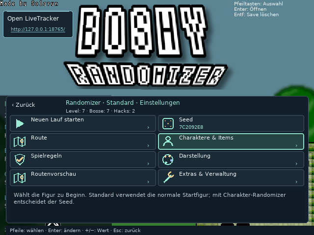
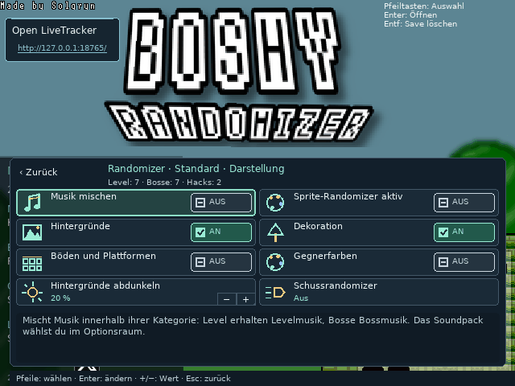
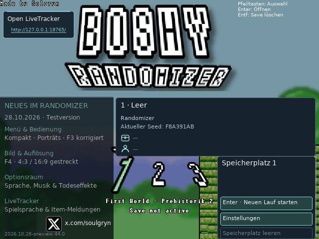
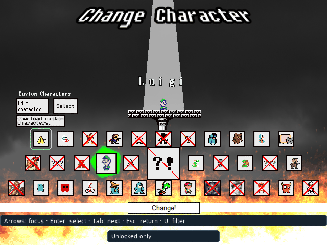
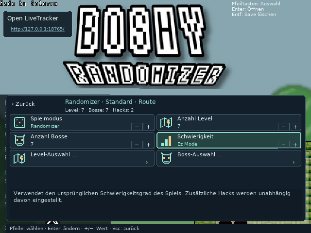

Neue Wege durch Boshy
Level, Bosse und Geheimwege werden neu gemischt. Du entscheidest, welche dabei sind.
 GitHub ↗
GitHub ↗Kram Boshy wieder raus. Jeder Seed ein neues Abenteuer.
Boshys Welten und Bosse in neuer Reihenfolge, Überraschungen in jeder Truhe. Stell dir deinen Lauf zusammen und teile ihn mit Freunden.
Erste finale Version · in Vorbereitung
Kurz vor der ersten finalen Version →
Du brauchst deinen eigenen Boshy-Ordner oder eine ZIP. Das Originalspiel ist nicht enthalten.
I Wanna Be The Boshy bei Grynsoft herunterladen ↗
So wird die Installation funktionieren →
Die erste finale Version kommt bald. Hier bekommst du schon einen Vorgeschmack.
Ein paar animierte Einblicke in die Einstellungen.



Überrasch mich
Gemischte Level, Bosse und Truhen – bis zum Finale gegen Solgryn.
Gib mir Sammelziele
Finde die gesuchten Items und besiege deine Bossziele, um Solgryn zu erreichen.
Den originalen Weg spielen
Spiel den originalen Weg, auf Wunsch mit deinen Lieblingsextras.
Nur die Bosse
Ein Boss nach dem anderen. Du wählst, wer dabei ist.
Vor allem Plattform-Level
Spring durch deine Levelauswahl. Zum Schluss wartet Solgryn.
Level, Bosse und Geheimwege werden neu gemischt. Du entscheidest, welche dabei sind.
Ein Item oder ein neuer Charakter? Im Randomizer weißt du es erst, wenn du sie öffnest.
Teile deinen Seed mit Freunden und tretet auf derselben Route gegeneinander an.
Ein Lauf zum Üben, einer fürs Rennen, einer fürs Chaos. Setz jederzeit dort fort, wo du aufgehört hast.
Zeit, Tode und gesammelte Items im LiveTracker – auch für deinen Stream.
Schaff es bis zum Finale und sieh dir an, wie du dich geschlagen hast.
Vertraute Welten bekommen andere Hintergründe, Farben und Sprites. Du bestimmst, wie wild es wird.
Lass deine Schüsse unterwegs wechseln und misch die Musik neu.
Lust auf Kamilia 3 oder WannaFest22? Eigene Soundpacks bringen deren Musik und Todeseffekte mit.
Wähle im Spielmenü optionale Extras fürs Training oder für eine andere Herausforderung.
Anklicken und ansehen.




Erste finale Version · in Vorbereitung
Windows · x64
Linux Mint 22 / Ubuntu 24.04 · X11 · amd64
Du brauchst deinen eigenen Boshy-Ordner oder eine ZIP. Das Originalspiel ist nicht enthalten.
I Wanna Be The Boshy bei Grynsoft herunterladen ↗
Für die erste finale Version brauchst du deine eigene originale Boshy-ZIP oder deinen Spielordner. Das Originalspiel wird nicht mitgeliefert.
Windows-Setup herunterladen und öffnen. Folge dem Assistenten, um Boshy Randomizer zu installieren.
Wähle im Einrichtungsassistenten deine originale Boshy-ZIP oder deinen Spielordner. Der Randomizer legt eine eigene Spielkopie an.
Einen der drei Speicherplätze und einen Spielmodus wählen. Dann deinen Lauf starten.
Die DEB mit der Paketinstallation öffnen und samt Abhängigkeiten installieren, darunter Wine und Lutris.
Boshy Randomizer im Anwendungsmenü öffnen. Die erste Wine-Einrichtung abwarten und dann deinen originalen Boshy-Ordner oder die ZIP auswählen.
Speicherplatz und Modus wählen. Später startest du Boshy Randomizer wieder über dein Anwendungsmenü.
Der Randomizer legt eine eigene Spielkopie an. Originalspielstände bleiben unberührt; Updates und Deinstallation behalten die Randomizer-Spielstände.
Der eingebaute Live-Tracker ist ein separates Fenster: neben das Spiel stellen oder in OBS erfassen.
Öffne die Diagnose im Spielmenü und ergänze deine GitHub-Meldung um Modus, Seed und eine Beschreibung des Problems.
Bisher hat THXel den Randomizer allein getestet. Die letzten Tests vor der ersten finalen Version laufen.
Die erste finale Version wird vorbereitet. Sobald sie fertig ist, stehen hier Windows-Setup und Linux-DEB bereit. Ein Veröffentlichungstermin steht noch nicht fest.
Dies ist ein Einzelspieler-Randomizer. Das alte Boshy-Online-Menü ist deaktiviert. Über Seed-Codes könnt ihr vergleichbare Läufe mit Freunden spielen.
Du hast eine Frage oder eine Idee? Teile sie auf GitHub.
Frage oder Idee teilen ↗